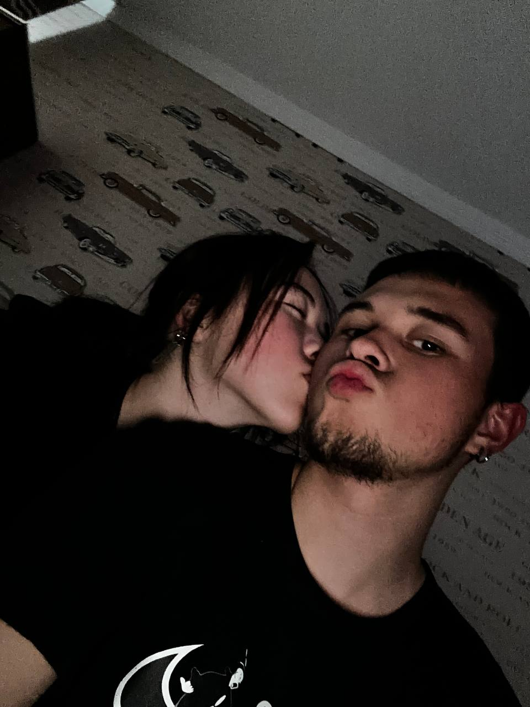
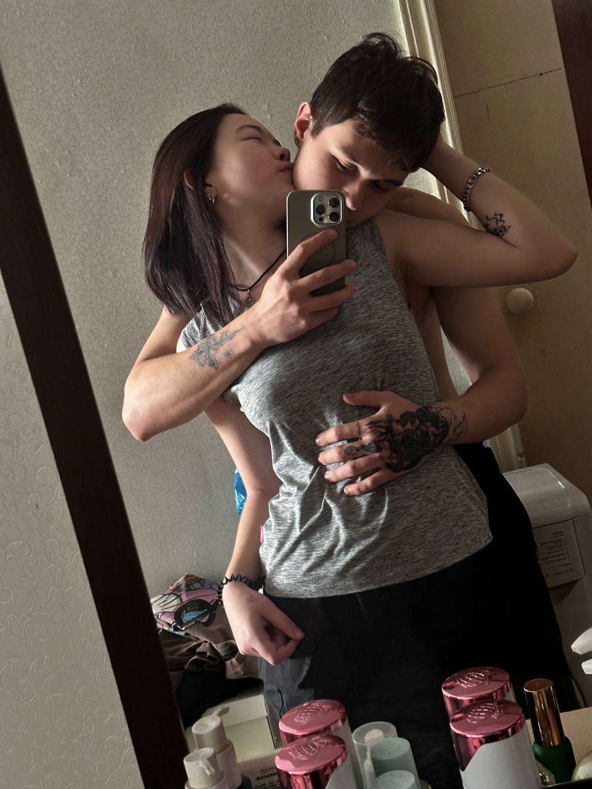
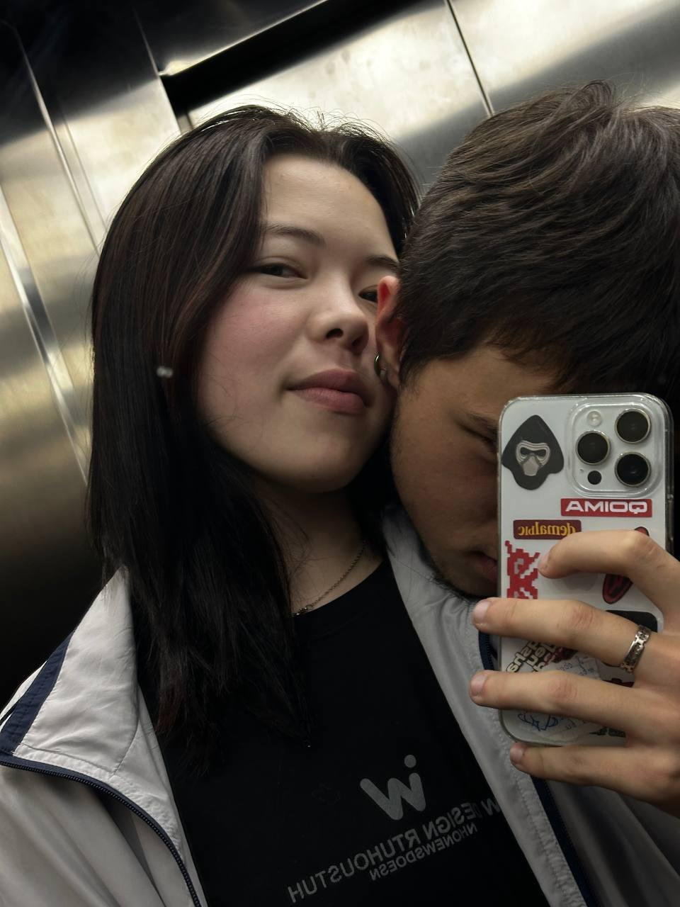

11.09.2025 первые сообщения
♡
САМОЕ НАЧАЛО
«Руся мой»
И почти сразу — «давай он наш?». А дальше «всё, тигрица» и ответное «мяу». У нас даже начало было со своим языком.
Руся мойтигрицамяу
Я тут кое-что сделал. Не потому что умею красиво говорить, а потому что ты у меня есть — и это уже причина сделать что-то особенное.
А потом как-то незаметно появились свои слова, свои приколы, свои «добли утло», скучания, обнимашки и это чувство, когда один человек становится самым родным.
я выбрала тебя потому что я полюбила твое умение любить, твой вкусный голос, как ты обнимаешь и целуешь, я просто таааю...
Не идеальная история из кино. Наша. Со своими словечками, нежностью и настоящими чувствами.
И почти сразу — «давай он наш?». А дальше «всё, тигрица» и ответное «мяу». У нас даже начало было со своим языком.
Ты написала, что рядом со мной тебе максимально комфортно, что ты чувствуешь себя там, где и должна быть. Что можешь быть собой. Я хочу, чтобы ты всегда так себя чувствовала.
Я писал, что хочу горы свернуть ради тебя, что люблю даже твои маленькие косяки и умиляюсь тобой. И что утреннее «добли утло❤️» уже стало чем-то родным.
Ты поблагодарила меня за то, что покормил тебя, купил чехольчик и просто провёл с тобой время. Я запомнил это: дело не в масштабе подарка, а в том, что мы рядом.
Ты написала, как скучаешь по моему голосу, улыбке и смеху, и что хочешь быть рядом, поддерживать и обнимать. Я хочу отвечать тебе тем же — не только словами, но и поступками.
Нажми на карточки. У каждой — своё настроение.
Выбери наше словечко
Самые тёплые воспоминания, которые хочется сохранить навсегда.

тот самый момент ♡

твоя улыбка ♡

рядом с тобой ♡

это наше ♡

и ещё воспоминание ♡
Каждая фотография — маленькая история о нас ♡
прочитай, когда захочешь немного тепла
твой Вань ♡Ну что я тебе могу сказать, а? Я иногда вообще не умею нормально объяснить, насколько сильно тебя люблю. Просто ты у меня такая родная, такая моя, что хочется забрать тебя в обнимку и сидеть так, чтобы никуда не торопиться.
Я люблю твой голос, твой смех, твоё «мяу», наши приколы и даже то, как мы можем с одной ерунды начать смеяться. Люблю, когда ты пишешь мне своё «добли утло❤️», люблю знать, как у тебя дела, и люблю эти обычные моменты, которые почему-то становятся самыми дорогими.
Я хочу, чтобы рядом со мной ты могла быть собой. Без необходимости притворяться сильнее, веселее или удобнее. Если день не задался — я выслушаю. Если грустно — буду рядом. Если всё хорошо — буду радоваться вместе с тобой. А если просто захочется обнимашек, ну ты знаешь, я тут.
И да, я всё ещё тот самый, который хочет горы свернуть ради своей кисы. Иногда могу писать как дурачок, иногда не сразу нахожу правильные слова, но чувства у меня настоящие. Я хочу показывать тебе любовь не только сообщениями, а тем, как отношусь к тебе каждый день.
Люблю тебя сильно-сильно, тигрица моя. Мяу ❤️
Нажми. Тут кое-что, что я хочу, чтобы ты помнила.
Люблю тебя, солнышко. Сильно-сильно. Иди сюда, обниму ❤️